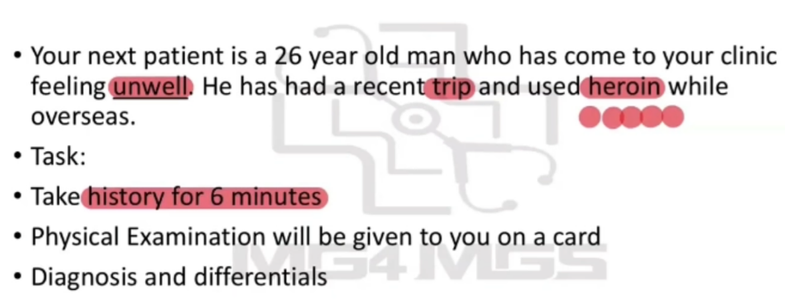
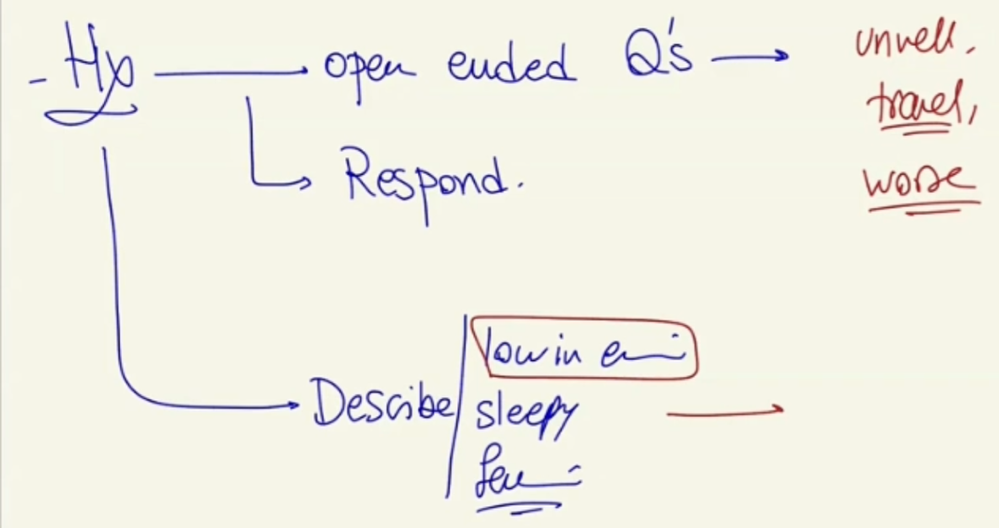
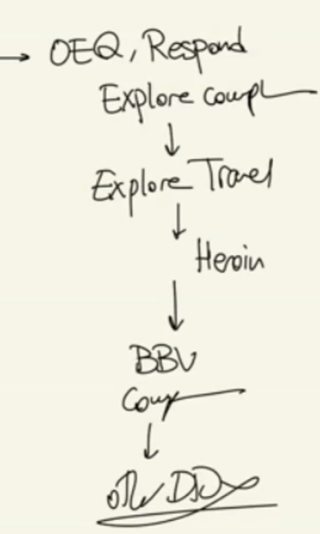
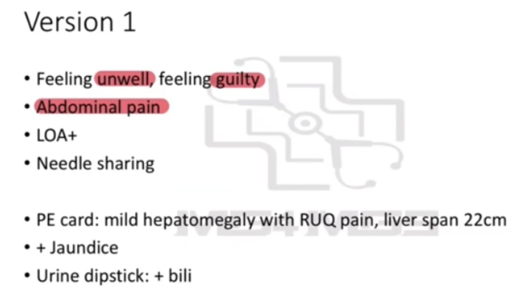
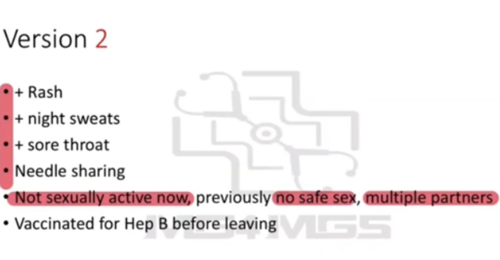
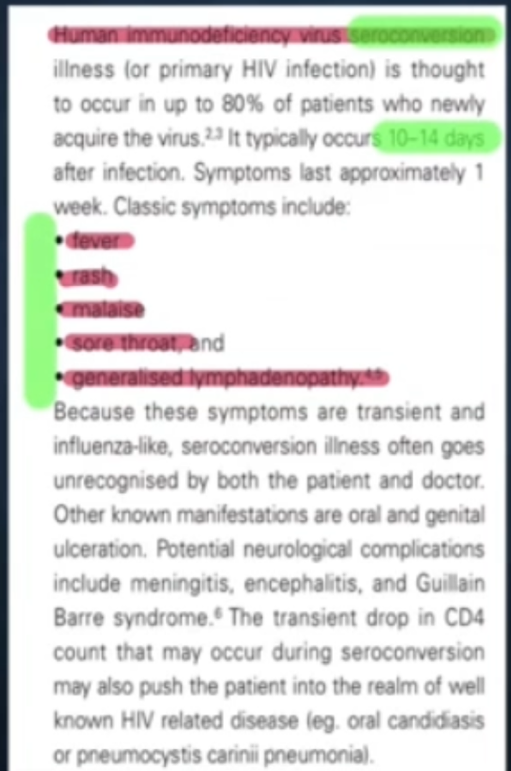
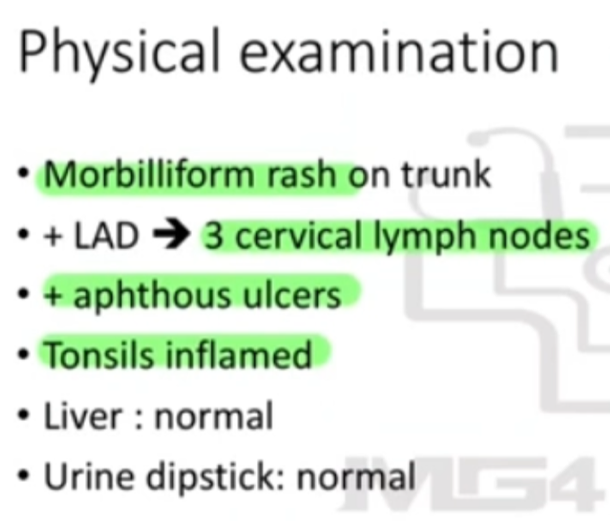
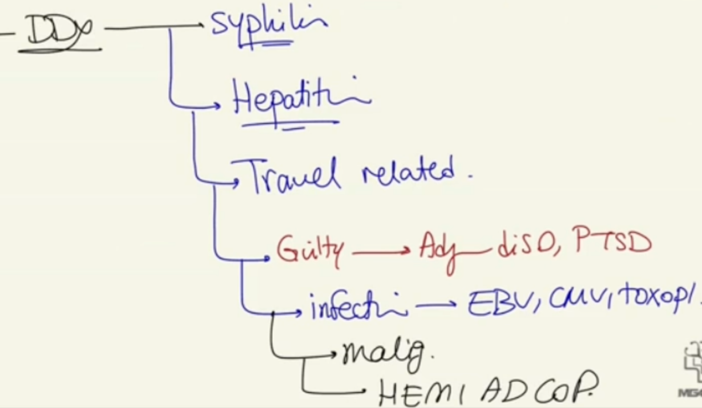
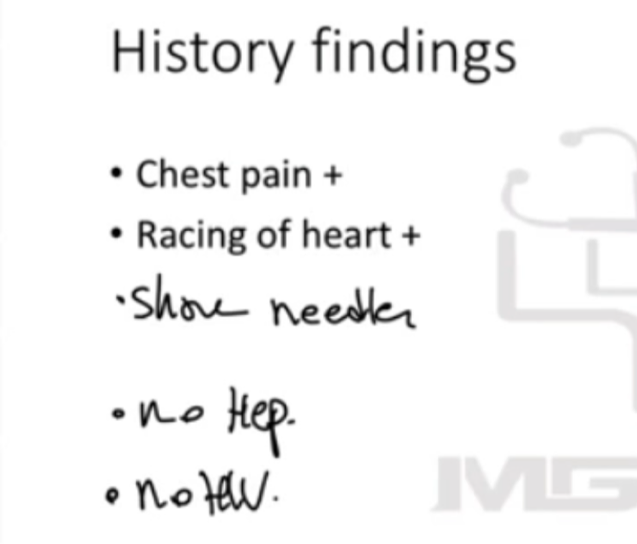
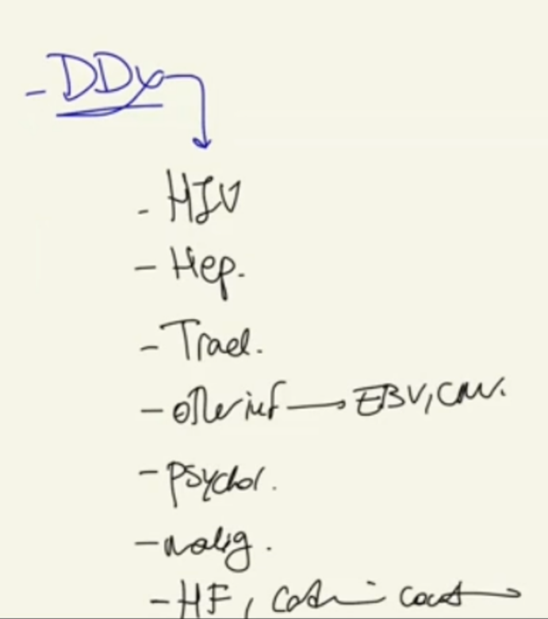

Source: Dr. Amir workshop — Med workshop 2 - 2026 / CLASS 5 UNWELL (Aug 2026 drop) · Specialty: general_practice
A patient returns from a trip feeling progressively unwell and low in energy. The pivotal history finding is overseas heroin use by injection with needle sharing, which reframes the differential towards blood-borne viruses and their complications. The workshop runs three versions with the same opening: Version 1 - acute viral hepatitis (B or C), Version 2 - HIV seroconversion, and Version 3 - infective endocarditis. The correct diagnosis is driven by the examination card and additional positives.
Open-ended start ('How can I help you today?'), then acknowledge the concern. The patient later volunteers guilt and shame ('I feel guilty', 'it was my first time', 'I feel ashamed') - a psychological door that must be opened non-judgementally, allaying guilt and exploring mood, sleep and coping.
HIV seroconversion: sore throat, rash, fever, chills, appetite loss, weight loss.
Hepatitis: abdominal pain, nausea, vomiting, dark urine, pale stool, itchiness.
Infective endocarditis (most important IVDU complication): chest pain, shortness of breath, palpitations/racing heart; injection-site infection (redness, swelling, pain).
Complete with a malignancy screen (weight/appetite loss, night sweats, lumps, family history) and a rapid travel-infection screen (dengue, malaria, TB, gastroenteritis, atypical pneumonia).
Version 1 - Hepatitis: abdominal pain, appetite loss, jaundice; exam - mild tender hepatomegaly with RUQ pain, urine dipstick bilirubin positive. Explanation: inflammation of the liver, most likely Hepatitis B or C given needle sharing.
Version 2 - HIV seroconversion: rash, sore throat, tiredness; exam - cervical lymphadenopathy, inflamed throat, aphthous ulcers. Needle sharing plus unsafe sex places HIV first.
Version 3 - Infective endocarditis: chest pain, palpitations; exam - murmur, raised JVP, bibasal crackles, peripheral oedema (features of heart failure). Explanation: infection of the inner lining of the heart following injecting, affecting cardiac function.










Reviewed by: history-taking-expert (Australian clinical supervisor) · fact-checked against the irStudy medical textbook RAG index.